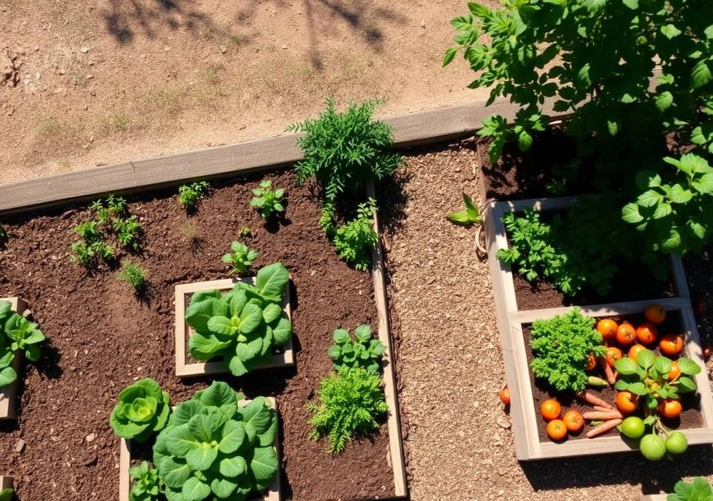
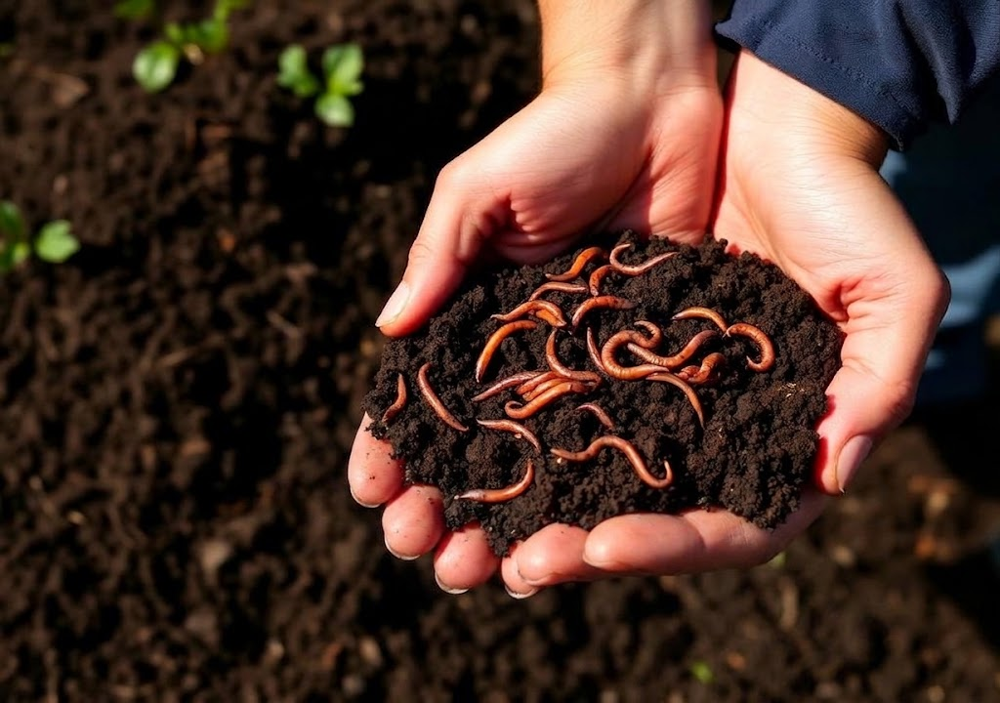
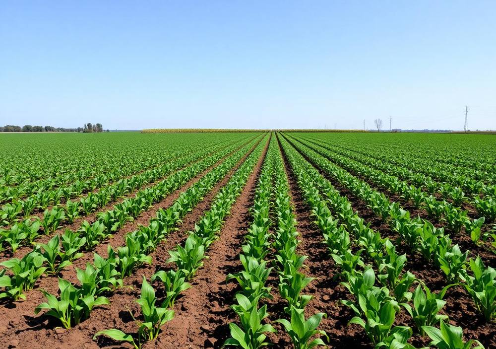
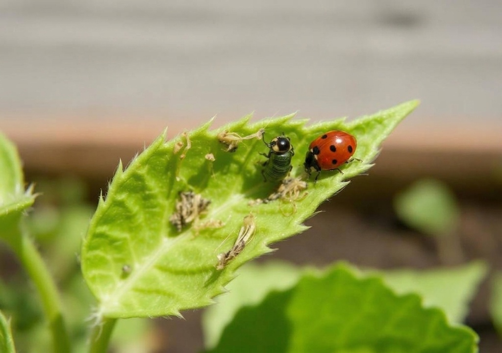
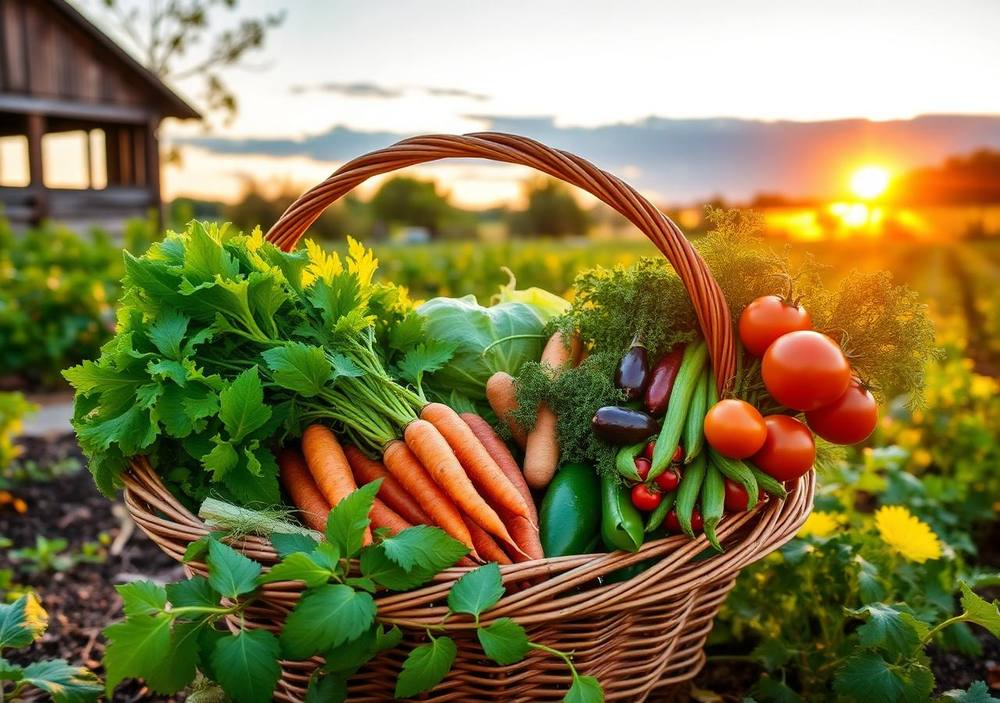
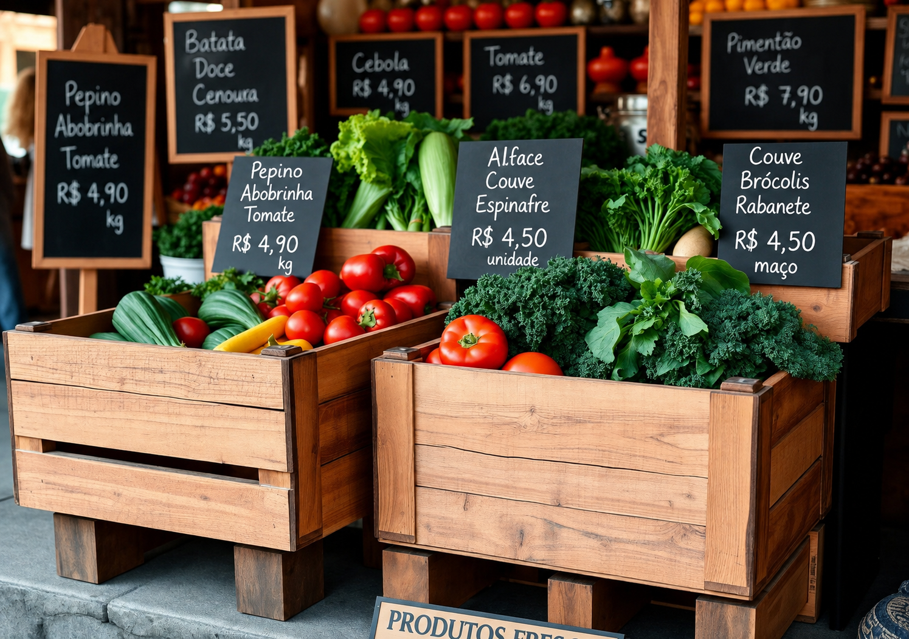

Da escolha do terreno à colheita na mesa: o guia completo e ilustrado da especialidade do Clube de Desbravadores — com a terra sob as unhas e o coração no campo.
Antes de tudo
Agricultura familiar de subsistência é aquela em que a própria família é a mão de obra, o terreno é pequeno e a produção serve primeiro para alimentar a casa — o excedente é que vai para a feira.
Ela nasce de um princípio antigo: “o Senhor Deus tomou o homem e o colocou no jardim do Éden para o cultivar e o guardar” (Gênesis 2:15). Trabalhar a terra ensina paciência, disciplina, dependência de Deus e respeito pelo tempo das coisas — nenhuma semente germina com pressa.
No Brasil, a agricultura familiar ocupa cerca de 77% dos estabelecimentos rurais e responde por boa parte do feijão, da mandioca, do leite, do milho e das hortaliças que chegam à mesa das famílias. É pequena no tamanho e enorme no impacto.

Requisito prático
Uma área de 2 m × 5 m já cumpre a exigência e cabe em quase qualquer quintal. O caminho tem quatro passos, e nenhum deles pode ser pulado.
Terreno plano ou de leve declive, com no mínimo 5 a 6 horas de sol direto (de preferência o sol da manhã), perto de uma fonte de água, longe da sombra e das raízes de árvores grandes, protegido do vento forte e do trânsito de animais. Evite baixadas onde a água empoça.
Retire pedras, entulho, garrafas e restos de construção. Arranque as ervas daninhas pela raiz, com enxada ou à mão depois de molhar o solo. Não jogue o mato com sementes maduras na composteira — deixe secar ao sol antes. Cerque a horta com tela, bambu ou ripas.
Revolva a terra a 20–30 cm de profundidade, quebre os torrões, nivele e levante canteiros de 1 m a 1,20 m de largura por 15–20 cm de altura. Faça o teste do pH (ideal entre 6,0 e 6,8) e, se for ácido, aplique calcário 30 dias antes. Incorpore esterco curtido ou composto.
Semeadura direta (cenoura, rabanete, feijão, milho) ou transplante de mudas (alface, couve, tomate) no fim da tarde. Respeite o espaçamento da embalagem, regue logo após o plantio, cubra o solo com palha (mulching) e acompanhe todos os dias.
Ferro, madeira e cuidado
| Ferramenta | Para que serve |
|---|---|
| Enxada | Capinar, abrir sulcos, amontoar terra e fazer canteiros |
| Enxadão / picareta | Solo duro, abrir covas e arrancar tocos e raízes |
| Pá de corte e pá quadrada | Cavar, transportar terra, esterco e composto |
| Ancinho (rastelo) | Nivelar canteiros e juntar folhas e restos vegetais |
| Sacho / cultivador manual | Capina fina entre as mudas e afofamento do solo |
| Foice e facão | Roçar mato alto (uso restrito a adultos ou supervisionado) |
| Tesoura de poda | Podar, desbrotar tomateiro e colher folhosas |
| Regador e mangueira | Irrigação em chuveirinho, sem bater forte na muda |
| Carrinho de mão | Transporte de adubo, palha e colheita |
| Pulverizador costal | Aplicar caldas e defensivos naturais |
| Trena, barbante e estacas | Marcar a área e alinhar as fileiras |
| Luvas, botas, chapéu, mangas longas | Equipamento de proteção — parte da ferramenta! |
Relatório de adubos
Adubo é o alimento da terra. Existem os orgânicos (de origem vegetal ou animal), os minerais/químicos (industrializados) e os verdes (plantas cultivadas para serem incorporadas ao solo).
Toda planta precisa de três nutrientes principais — N (nitrogênio, folhas verdes), P (fósforo, raízes e flores) e K (potássio, frutos e resistência) — além de cálcio, magnésio, enxofre e micronutrientes.

| Material | Tipo | Principais características |
|---|---|---|
| Esterco bovino curtido | Orgânico animal | Equilibrado e fácil de achar; melhora a estrutura do solo. Curtir 60–90 dias, senão “queima” as raízes e traz sementes de mato. |
| Esterco de galinha (cama de aviário) | Orgânico animal | Muito rico em nitrogênio e fósforo; forte — usar em pouca quantidade e sempre bem curtido. |
| Composto orgânico | Orgânico vegetal/animal | Restos de cozinha e do quintal decompostos. Libera nutrientes aos poucos, retém umidade e é gratuito. |
| Húmus de minhoca | Orgânico | O “ouro negro”: rico em microrganismos, não queima raízes, ótimo para mudas e sementeiras. |
| Cinza de madeira | Orgânico mineralizado | Fornece potássio e cálcio e ajuda a corrigir acidez. Use com moderação; nunca cinza de carvão tratado. |
| Casca de ovo triturada | Orgânico | Fonte de cálcio; previne podridão apical no tomate. Liberação lenta. |
| Torta de mamona / farinha de osso | Orgânico concentrado | N alto (mamona) e P alto (osso). Torta de mamona é tóxica para cães. |
| Adubo verde (feijão-de-porco, mucuna, crotalária) | Verde | Fixa nitrogênio do ar, protege e descompacta o solo, controla mato. Corta-se antes da floração. |
| Calcário dolomítico | Corretivo mineral | Não é adubo: corrige a acidez e fornece cálcio e magnésio. Aplicar 30 dias antes do plantio. |
| NPK 4‑14‑8 / 10‑10‑10 | Mineral (químico) | Efeito rápido e dose exata, mas caro e, usado em excesso, saliniza e empobrece o solo a longo prazo. |
Atividade prática
Nunca coloque: carne, laticínios, óleo, fezes de cão ou gato e plantas doentes.
Famílias de plantas
Épocas indicadas para o clima brasileiro; em regiões de clima ameno muitas hortaliças podem ser plantadas o ano todo.
| Família | Espécies (3+) | Melhor época | Observações |
|---|---|---|---|
| Tubérculos e raízes | Batata, batata-doce, mandioca, inhame, cará, cenoura, beterraba | Plantio de agosto a novembro (mandioca no início das chuvas); colheita de 3 a 12 meses | Exigem solo fofo e profundo; ricos em energia (carboidratos) |
| Gramíneas (cereais) | Milho, arroz, trigo, sorgo, aveia, cana-de-açúcar | Milho e arroz: setembro a dezembro (águas). Trigo e aveia: abril a junho (frio) | Milho serve de tutor para o feijão e quebra-vento na horta |
| Legumes / leguminosas | Feijão, ervilha, vagem, quiabo, abobrinha, chuchu, pepino | Feijão: setembro–novembro e fevereiro–março. Ervilha: março a maio (frio) | Leguminosas fixam nitrogênio no solo — ótimas na rotação |
| Verduras (folhosas) | Alface, couve, rúcula, espinafre, agrião, repolho, salsa, cebolinha | Ideais no outono/inverno (março a agosto); há cultivares de verão | Ciclo curto (30–60 dias): dão as primeiras colheitas da horta |
| Frutos | Tomate, pimentão, berinjela, morango, melancia, mamão, banana, maracujá | Tomate e pimentão: agosto a fevereiro. Morango: março a maio | Precisam de sol pleno, tutoramento e cálcio bem distribuído |
O tomate, a batata, o pimentão e a berinjela são todos da mesma família botânica: as solanáceas. Por isso nunca devem se seguir no mesmo canteiro — as pragas e doenças de um são as do outro.
Croqui do canteiro
Regra de ouro: plantas altas ao fundo (para não sombrear as baixas), canteiros de até 1,20 m de largura (dá para alcançar o meio sem pisar na terra) e corredores de 40–50 cm.
Depois da queima dos tocos
Onde se queimaram tocos e troncos, a cinza deixa o solo rico em potássio, cálcio, fósforo e magnésio e com o pH mais alto (menos ácido). É um ponto naturalmente fértil — e por isso ideal para plantas exigentes:
Atenção: espere a cinza esfriar e a chuva assentar, misture com terra e matéria orgânica, e não plante logo em cima da cinza pura — o excesso de sais pode prejudicar a germinação. Vale lembrar que a queimada empobrece o solo a médio prazo e hoje é desaconselhada e regulamentada por lei; o ideal é triturar os restos e usá-los como cobertura morta.

Relatório de sanidade

| Problema | Sintoma | Controle natural |
|---|---|---|
| Pulgão | Folhas enroladas, melado pegajoso, formigas subindo | Calda de sabão neutro, extrato de alho/cebola, óleo de neem; preservar joaninhas e crisopídeos |
| Lagartas | Folhas furadas e roídas nas bordas | Catação manual, Bacillus thuringiensis, calda de pimenta; atrair pássaros |
| Mosca-branca | Nuvem branca ao mexer na planta; folhas amareladas | Armadilha adesiva amarela, neem, cravo-de-defunto ao redor |
| Formiga cortadeira (saúva) | Folhas cortadas em meia-lua, trilhas no chão | Localizar e tratar o formigueiro, barreira de borra de café ou casca de pepino, gergelim |
| Lesmas e caracóis | Rastros prateados, furos em folhas tenras | Coleta noturna, armadilhas de cerveja, barreira de cinza ou casca de ovo |
| Nematoides | Raízes com nós, planta murcha mesmo regada | Rotação com crotalária, solarização do solo, muita matéria orgânica |
| Míldio e oídio (fungos) | Manchas brancas ou aveludadas nas folhas | Calda bordalesa, calda de leite (1:10), bicarbonato; melhorar ventilação |
| Ferrugem e antracnose | Pústulas alaranjadas, manchas escuras em frutos | Calda bordalesa, retirada das partes afetadas, evitar molhar folhas |
| Podridão apical do tomate | Fundo do fruto preto e murcho | Falta de cálcio + rega irregular: calcário, casca de ovo e irrigação constante |
| Tiririca, caruru, picão, capim-colonião | Mato que rouba água, luz e nutrientes | Capina manual pela raiz, cobertura morta (palha), adubo verde, solarização com lona |
Planejamento
Fornecimento contínuo não é sorte: é calendário. A técnica principal é o plantio escalonado — semear pequenas quantidades a cada 15 ou 20 dias, em vez de tudo de uma vez.
Um metro de alface a cada duas semanas garante alface fresca toda semana, em vez de 60 pés maduros no mesmo dia.
Combine ciclo curto (rabanete 30 dias, alface 45), médio (cenoura 90) e longo (mandioca 12 meses) no mesmo terreno.
Folhosas e ervilha no frio; tomate, quiabo e abóbora no calor. Um calendário anual na parede do galpão evita esquecimentos.
Selecione as melhores plantas, seque bem as sementes e guarde em vidro fechado, com sílica ou arroz, em lugar fresco e escuro.
Congelar, desidratar ao sol, fazer conservas, geleias, farinha e polvilho. Batata, abóbora e cebola armazenam bem no seco e arejado.
Ter mudas prontas em sementeira para replantar no dia seguinte à colheita mantém o canteiro sempre ocupado e produtivo.
Da terra para a mesa e para a feira


Rotação de culturas
Rotação de culturas é alternar, em um mesmo canteiro, espécies de famílias botânicas diferentes a cada ciclo de plantio.
Divida a horta em quatro canteiros e vá deslocando os grupos um canteiro para o lado a cada ciclo. Assim, cada família só volta ao mesmo lugar depois de quatro ciclos (de 2 a 4 anos).
Sequência ideal: Folhosas (comem N) → Frutos (comem P e K) → Raízes (revolvem o fundo) → Leguminosas (devolvem N) → recomeça.
| Ciclo | Canteiro 1 | Canteiro 2 | Canteiro 3 | Canteiro 4 |
|---|---|---|---|---|
| 1º (verão) | Folhosas — alface, rúcula | Frutos — tomate, pimentão | Raízes — cenoura, beterraba | Leguminosas — feijão-vagem |
| 2º (outono) | Leguminosas — ervilha | Folhosas — couve, espinafre | Frutos — abobrinha | Raízes — rabanete, nabo |
| 3º (inverno) | Raízes — batata-doce | Leguminosas — feijão | Folhosas — repolho, brócolis | Frutos — morango |
| 4º (primavera) | Frutos — quiabo | Raízes — mandioca | Leguminosas — feijão-de-porco | Folhosas — alface, salsa |
| 5º | Recomeça o ciclo 1 — ou o canteiro entra em pousio com adubo verde | |||
Consomem nitrogênio. Entram logo depois das leguminosas.
Exigentes em fósforo e potássio. Pedem adubação reforçada.
Revolvem camadas profundas e aproveitam o resíduo dos anteriores.
Fixam nitrogênio do ar e recarregam o solo para recomeçar.
Depois de muitos anos
Deixar o solo em repouso por um ou dois ciclos, sem cultivo comercial, para recuperar estrutura e vida microbiana.
Plantar crotalária, mucuna, feijão-de-porco ou aveia e incorporar antes da floração: nitrogênio, matéria orgânica e solo descompactado.
Fazer análise de solo em laboratório, corrigir o pH com calcário e repor os nutrientes que faltam de fato — sem chute.
Transferir a horta para uma nova área e transformar a antiga em pomar, pasto, canteiro de flores ou área de compostagem.
Plantar árvores frutíferas e nativas junto com as hortaliças: sombra, folhas, umidade e fertilidade voltando sozinhas.
Aplicar grandes doses de composto e esterco, usar cobertura morta permanente e evitar revolver o solo (plantio direto).
“Terra cansada não é terra morta — é terra pedindo descanso.”
Relatório
A agricultura familiar de subsistência é a forma mais antiga e mais essencial de produção de alimentos. Nela, a família é ao mesmo tempo proprietária, administradora e mão de obra da propriedade, que costuma ser pequena — no Brasil, até quatro módulos fiscais, conforme a Lei nº 11.326/2006. A produção destina-se em primeiro lugar ao sustento do próprio grupo familiar, e apenas o excedente é comercializado em feiras, mercados locais ou programas públicos como o PNAE e o PAA.
Suas principais características são a diversidade de cultivos, o uso intensivo de mão de obra e de conhecimento tradicional, a baixa dependência de insumos externos, a gestão direta pela família e a forte ligação afetiva com a terra. Em vez de uma única cultura em grande escala, encontram-se na mesma propriedade horta, pomar, roça de milho e feijão, criação de galinhas, um porco, algumas vacas leiteiras, mandioca, plantas medicinais e árvores frutíferas. Essa diversidade é uma estratégia inteligente: se uma cultura falha por causa da seca ou de uma praga, as outras sustentam a casa.
A importância desse modelo é enorme. Segundo o Censo Agropecuário do IBGE, a agricultura familiar representa cerca de 77% dos estabelecimentos rurais brasileiros, ocupa aproximadamente 23% da área agrícola e emprega mais de dez milhões de pessoas — algo em torno de 67% de toda a mão de obra do campo. É dela que vem grande parte do feijão, da mandioca, do leite, das hortaliças, do café e das frutas consumidas diariamente pelos brasileiros. A ONU chegou a declarar a Década da Agricultura Familiar (2019–2028), reconhecendo seu papel decisivo no combate à fome no mundo.
Além da produção de alimentos, ela cumpre funções sociais e ambientais fundamentais: garante segurança alimentar e nutricional, gera renda e reduz o êxodo rural, mantém viva a cultura, as receitas e as sementes crioulas do campo, e costuma adotar práticas mais sustentáveis, como rotação de culturas, adubação orgânica, consórcios e preservação de nascentes e matas ciliares.
Para o desbravador, aprender agricultura familiar é aprender muito mais do que plantar. É exercitar o planejamento, a responsabilidade diária, a paciência diante do tempo de Deus, o trabalho em equipe e a gratidão pelo alimento. Quem já viu uma semente que plantou virar comida no prato jamais desperdiça alimento — e jamais esquece de quem faz a terra produzir.
Visita a campo
Visite uma propriedade onde a família viva da produção agrícola, leve caderno, câmera e — principalmente — muitas perguntas.
Para fechar
Uma colher de sopa de solo saudável contém mais microrganismos do que existem pessoas na Terra.
Uma única minhoca pode produzir cerca de meio quilo de húmus por ano e cavar galerias que arejam e drenam o solo.
São sementes guardadas e repassadas por gerações de agricultores. Adaptadas ao clima local, são um patrimônio vivo da família.
Milho, feijão e abóbora plantados juntos: o milho serve de tutor, o feijão dá nitrogênio, a abóbora cobre o solo. Sabedoria indígena milenar.
Cerca de um terço de todo o alimento produzido no mundo é desperdiçado. Quem planta aprende, na prática, a não desperdiçar.
A tradição do campo recomenda plantar folhosas na lua crescente e raízes na minguante — costume passado de avô para neto em toda roça brasileira.